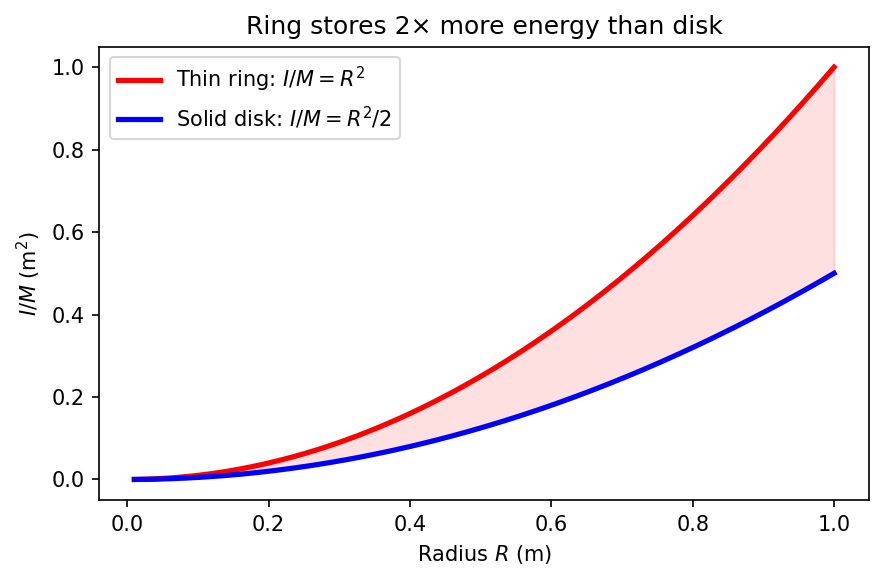
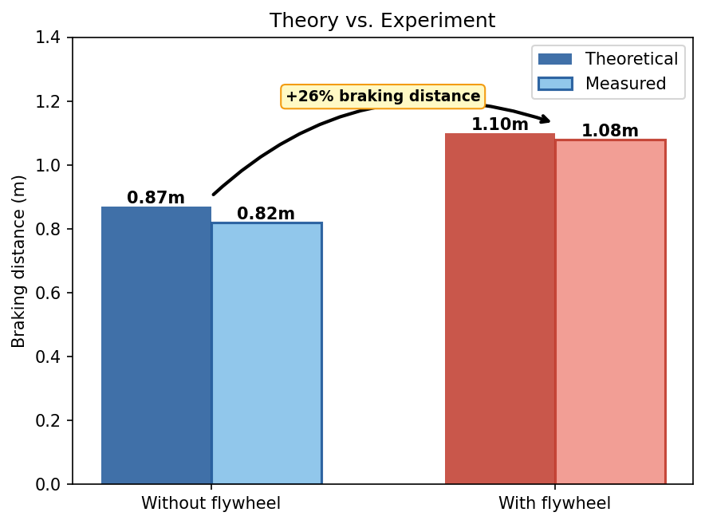

A flywheel stores kinetic energy proportional to its moment of inertia. Given a fixed perimeter of material, what shape maximizes $I$? This project solves that shape optimization problem computationally — comparing four parameterizations and validating the result with a physical prototype.

The objective is to maximize the moment of inertia $I$ over all closed curves $\gamma$ of fixed perimeter $L_0$, modeled as a 1D wire of linear density $\mu = 1\ \text{kg/m}$. The exact functional is:
For computational tractability, the arc-length element is approximated as $\sqrt{r^2+r'^2} \approx r$ — a second-order approximation valid near the circular optimum ($r' \ll r$, error $O((r'/r)^2)$) — yielding the simplified objective $I \approx \mu \int_0^{2\pi} r^3\,d\theta$ used in the numerical experiments. Both functionals share the same global maximizer.
Subject to three constraints:
A variational argument shows the circle is a critical point of $I$ under the perimeter constraint; the isoperimetric inequality ($4\pi A \leq L^2$) then confirms it is the unique global maximum. The computational contribution is verifying convergence across parameterizations and quantifying failure modes.
The curve $r(\theta)$ was represented four ways. Each parameterization leads to a different numerical behavior:
| # | Parameterization | Key finding |
|---|---|---|
| 1 | Fourier (linear) | Converges to circle — constraints couple naturally |
| 2 | Polynomial (polar) | Runge phenomenon: ~15% error on $I$ at degree $n=50$ |
| 3 | Polar (free $r(\theta_i)$) | Converges cleanly with Trust-Region |
| 4 | 3D surface extension | Diverges without compactness constraint |
scipy.optimize — full convergence history loggedA physical flywheel (circular, as predicted) was fabricated and tested on a miniature vehicle (mass 34g). Measured velocity $v(t)$ was compared against the theoretical prediction from the optimized $I$.

A flywheel stores rotational energy $E_c = \frac{1}{2}I\omega^2$. When coupled to a braking vehicle, it increases the effective inertia — and therefore braking distance. This Part II models, solves analytically, and validates experimentally the full braking dynamics.
Projecting Newton's second law along motion with drag ($\frac{1}{2}C_x\rho S v^2$), braking friction ($F_f$), and rolling resistance ($mgf$):
Defining transition speed $\gamma = \sqrt{\alpha/A}$, the closed-form solution is:
For our experiment: $\gamma \approx 35\,\text{m/s} \gg v_0 = 0.811\,\text{m/s}$ — drag is negligible (<1%), friction dominates. Parameters identified experimentally: $f = \tan(5.89°) \approx 0.103$ (inclined-plane test), $C_D \approx 1.1$ at $Re = 1081$.
The flywheel adds rotational kinetic energy that must also be dissipated by braking. In a true KERS system this energy is recovered; in the direct-coupling model it simply increases effective inertia. Theory agrees with experiment within 6%.